הסיפור של הפרויקט
זהו פרויקט שבו הבית הקיים פורק כמעט במלואו, ובמקומו תוכנן ונבנה בית גדול יותר בבניה קלה. הממ״ד נשאר במקומו, וכל שאר הבית תוכנן מחדש מהיסוד.
התהליך לא היה לינארי. התכנון עבר מספר שינויים והתאמות עד שהגענו לפתרון המדויק, כזה שמתאים גם למבנה הקיים, גם לדרישות הרשויות וגם לאופן שבו הבית אמור לחיות בפועל.
זהו פרויקט שממחיש עד כמה תכנון הוא לא רק שרטוט, אלא תהליך של קבלת החלטות, בדיקות בשטח ודיוק מתמשך עד לתוצאה הנכונה.
תכנון, הגשה לרשויות וליווי בשטח
תכנון הבית ופיתוח השטח כלל עבודה מול מודד מוסמך, מהנדס לחישובים סטטיים, רמ״י, פיקוד העורף, יועץ אינסטלציה ויועץ בטיחות.
במהלך הפרויקט בוצעו הגשות ואישורים שונים, ביניהם טופס 4 כפטור ממ״ד בעקבות השארת הממ״ד הקיים, התאמות לדרישות פיקוד העורף, אישור זכויות בנכס ואישור העדר חובות.
העבודה דרשה תיאום בין גורמים רבים, הבנה רחבה של כל שלב והובלה מדויקת של התהליך מול הרשויות והשטח.


הביצוע בשטח
השלב הביצועי כלל פירוק מלא של הבית הקיים, הגג והשלדה הקודמת, תוך השארת הממ״ד בלבד והתאמה של השלדות החדשות לרצפה הקיימת שלו.
בוצעו קידוחים ויציקות כלונסאות, כולל בדיקות בטון באותו יום, וכן יציקות נוספות לרצפת הבית ולחומה.
קונסטרוקציית הפלדה בוצעה באמצעות פרופילי I180, תוך שימוש בפלסיב להפרדה בין הברזל לבטון.
נוכחות שמונעת אי הבנות
במהלך העבודה בוצעו ריתוכים, צביעה באמצעות קומפרסור, יציקות בטון לתוך תבניות קונסטרוקציה ופריסה לפני ריטוט הבטון, כדי להבטיח ביצוע מדויק ואיכותי.
הליווי בפרויקט כזה הוא אינטנסיבי ודורש הגעה לשטח, בדיקה מול הקבלנים והקפדה שהם מבינים כל פרט, כדי למנוע אי הבנות ולשמור על התאמה מלאה בין התכנון לביצוע.
בית אמיתי נבנה לאורך זמן
הפרויקט בכרמיה עדיין נמצא בתהליך, וזה בדיוק מה שחשוב להבין. בית לא נבנה ביום אחד, ובטח לא כשמדובר בתהליך שכולל תכנון מחדש, עבודה מול רשויות, החלטות בשטח ותיאום בין גורמים רבים.
כשהתחלנו, הלקוחה עוד הייתה בהריון. היום הילדה כבר בת שנה, והבית עדיין מתקדם שלב אחרי שלב. זה לא אומר שמשהו לא עובד - זה אומר שמדובר בתהליך אמיתי, כזה שדורש סבלנות, התמדה ויכולת להחזיק דרך.
לאורך התקופה הזאת ליוויתי את הלקוחות גם בבחירות חומריות, גם בדיוק התכניות וגם בהתמודדות עם מה שקורה בפועל, כדי לשמור על כיוון ברור ולא לאבד את התמונה הגדולה.
מה קורה אחרי ההיתר?
הרבה חושבים שברגע שמתקבל היתר - התהליך הסתיים. בפועל, זה רק השלב שבו הדברים מתחילים לקרות באמת.
בשטח דברים משתנים, מתגלים פערים, נדרשות התאמות, וקבלת החלטות צריכה להיות מהירה ומדויקת.
אני לא מהאדריכליות שנעלמות אחרי ההיתר. מבחינתי, האחריות ממשיכה גם לשלב הביצוע - כדי לוודא שהתכנון מתורגם נכון למציאות.
זה ההבדל בין תכנית על הנייר לבין בית שבאמת נבנה נכון.
ליווי, בחירות והחלטות
מעבר לתכנון ולהגשה, הפרויקט כלל גם ליווי צמוד בבחירת חומרים, דיוק תכניות ופגישות עבודה עם הלקוחות.
ישבנו יחד על החלוקות, עברנו על שינויים, בדקנו ריצופים, חיפויים ופרטים, כדי לוודא שכל החלטה שנכנסת לבית באמת מתאימה לו.
חלק מההתקדמות דרש גם פעולה ישירה מול הגופים עצמם. הלקוח הגיע פיזית לרמ״י כדי להגיש, כי אין שם הגשה אונליין, וגם לפיקוד העורף כדי לזרז את התהליך.
זה בדיוק המקום שבו תכנון טוב פוגש מציאות: לא רק לשרטט, אלא ללוות, לדייק, להסביר ולקדם את הדברים גם כשהם מסתבכים בדרך.
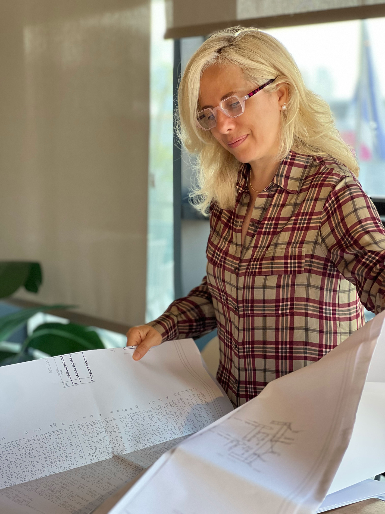
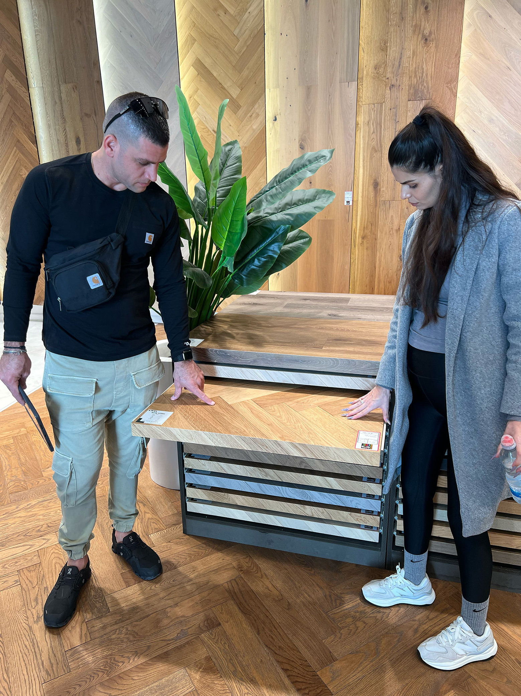
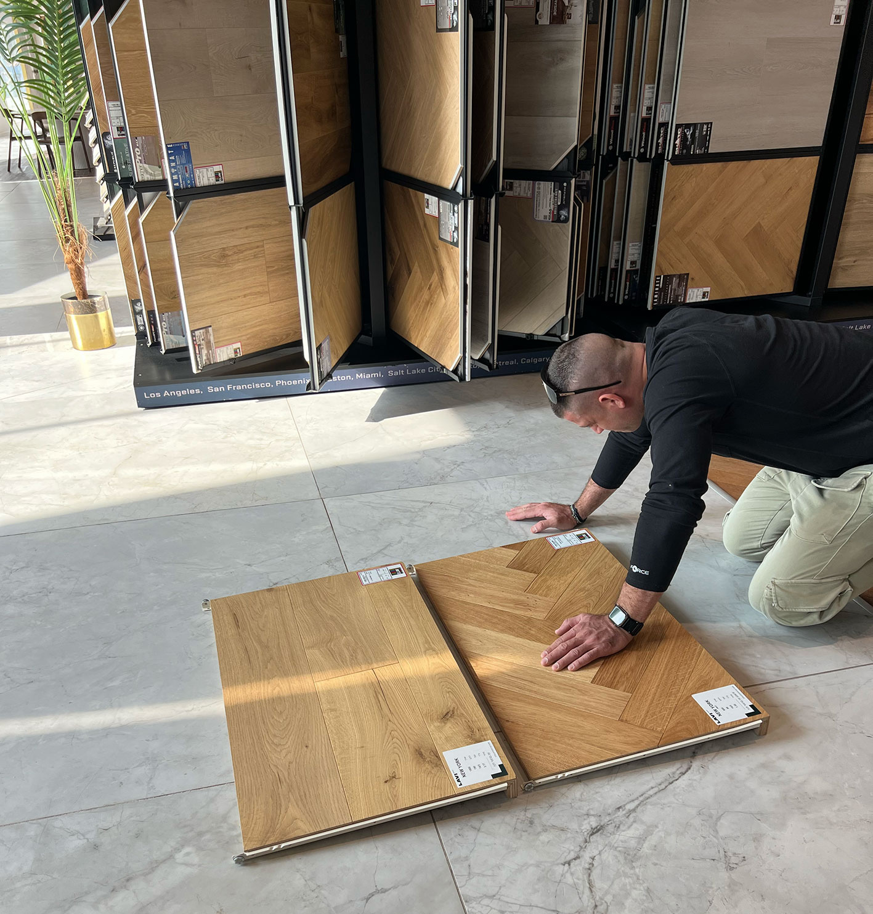
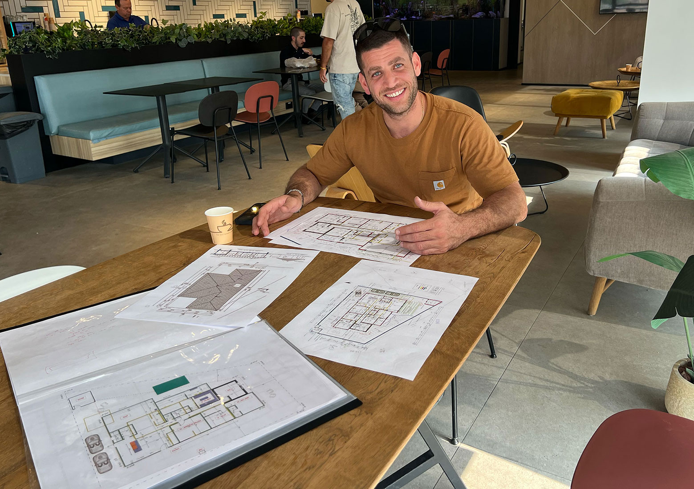
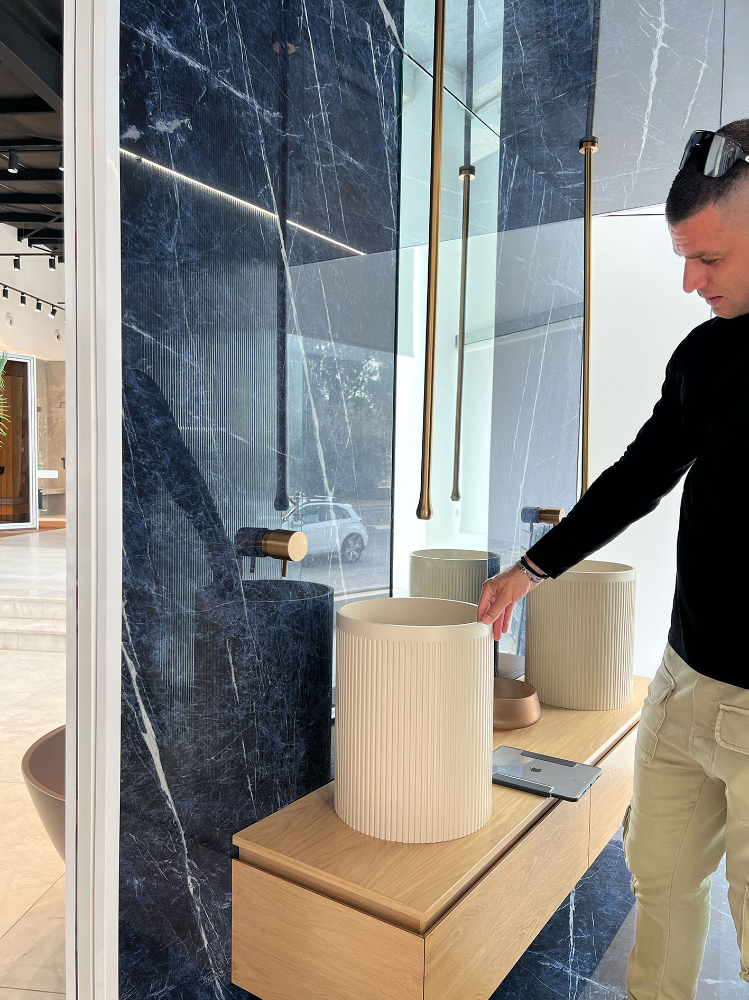
לפני תחילת התהליך - תיעוד מצב קיים וצילום רחפן ראשון
לפני תחילת העבודה הגעתי לשטח וביצעתי תיעוד מצב קיים מלא, כולל צילום רחפן, כדי להבין את הבית, המגרש, הגישה לנכס והקשר שלו לסביבה.
הצילום מלמעלה אפשר לראות טוב יותר את מיקום הבית ביחס לרחוב, את הכניסה הקיימת, את הקשר לשצ״פ הפתוח מאחור ואת הפוטנציאל התכנוני של המגרש כולו.
התמונות האלו מציגות את המצב הקיים לפני תחילת התכנון והעבודה בשטח, עוד לפני הפירוק, לפני ההתאמות ולפני תחילת הבנייה מחדש.
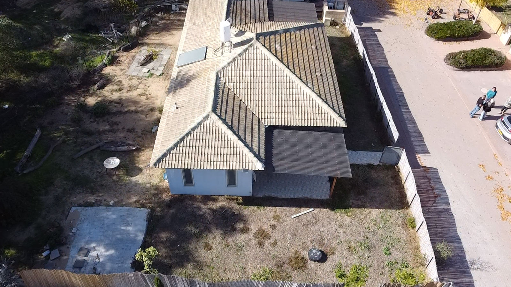
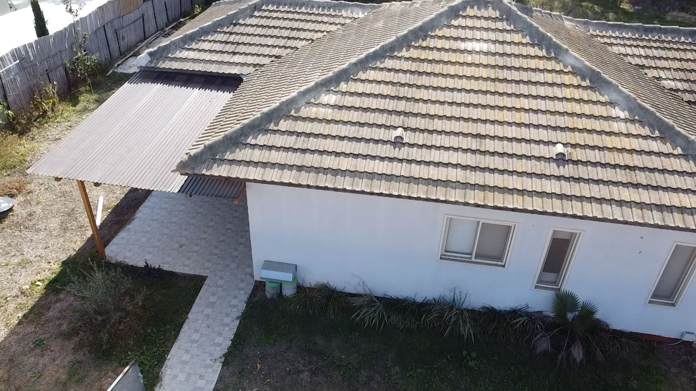
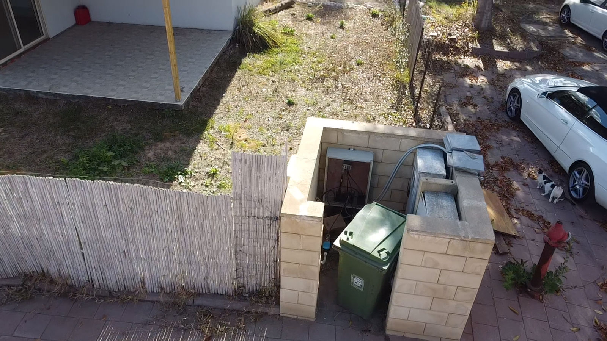
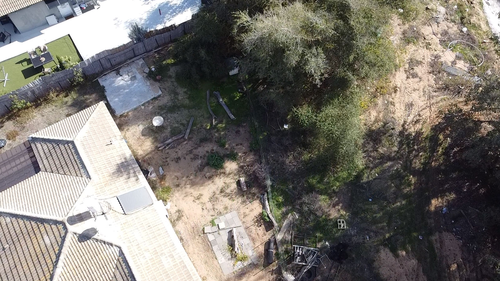


תמונות מהתהליך


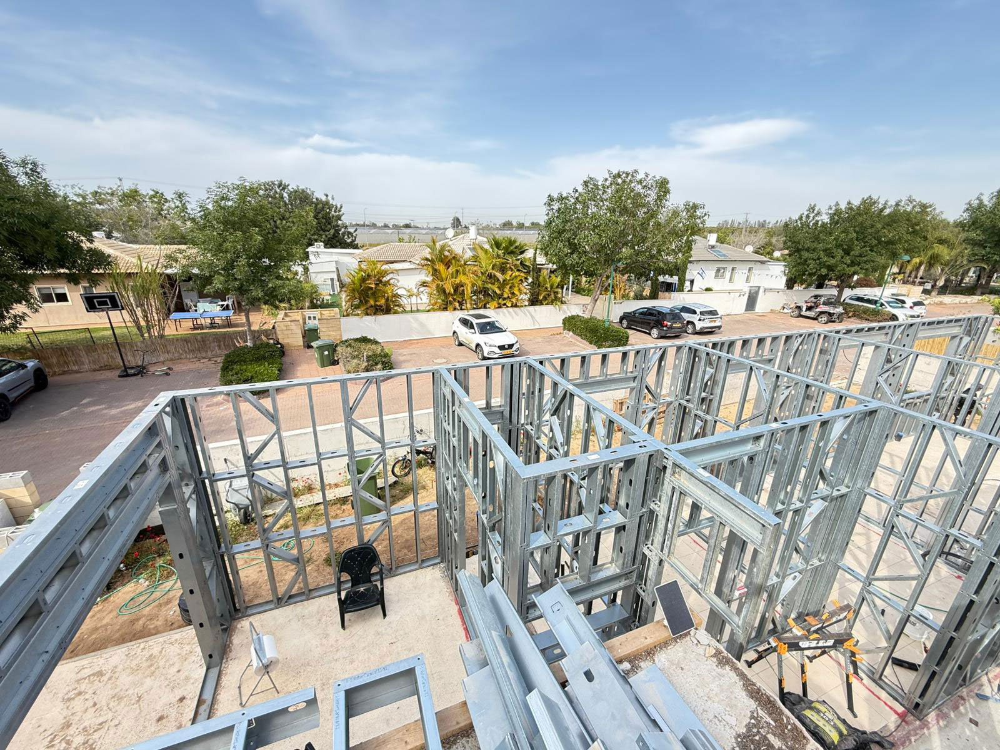
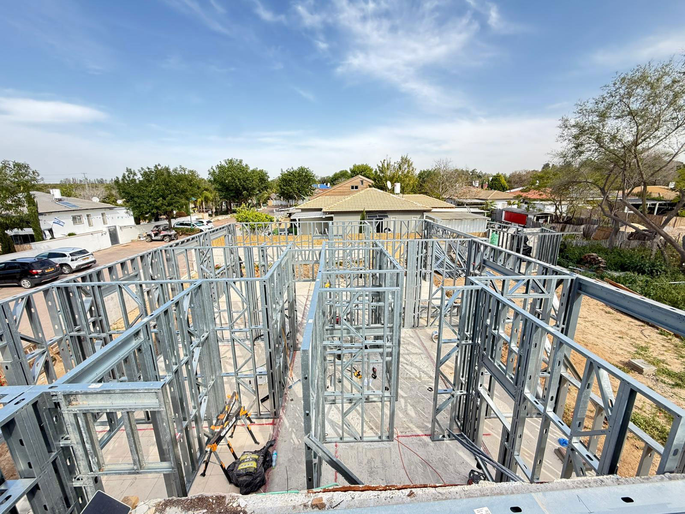
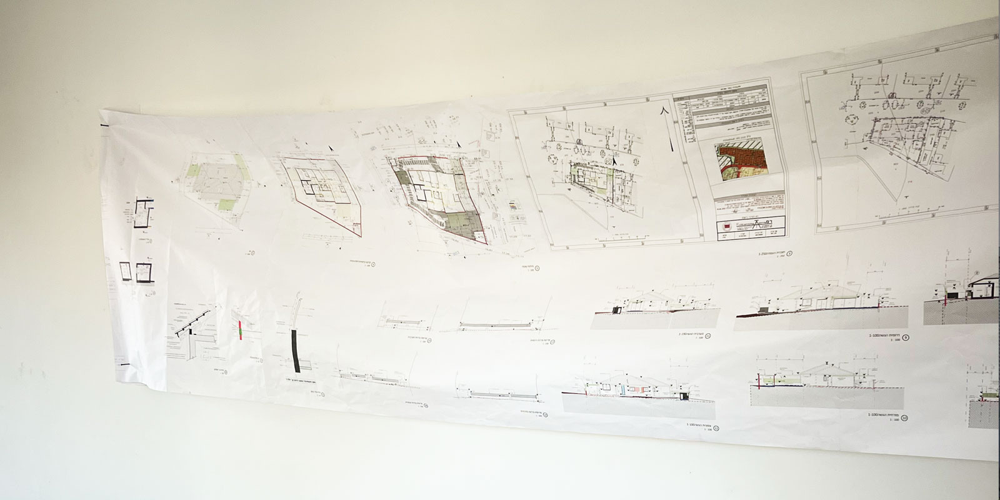


שאלות ותשובות
מה היה האתגר המרכזי בפרויקט?
פירוק כמעט מלא של הבית הקיים, תוך השארת הממ״ד והתאמת כל התכנון החדש אליו, לצד עבודה מול רשויות ותקנות שהשתנו תוך כדי התהליך.
אילו גורמים היו מעורבים בתהליך?
מודד מוסמך, מהנדס לחישובים סטטיים, רמ״י, פיקוד העורף, יועץ אינסטלציה, יועץ בטיחות, קבלנים ובעלי מקצוע נוספים בשטח.
מה כולל הליווי גם אחרי ההיתר?
התאמות בזמן אמת, מענה לשאלות, דיוק מול הקבלנים והמשך ליווי בהחלטות שמתגלות רק כשהפרויקט מתחיל לזוז באמת.
למה פרויקט כזה לוקח זמן?
כי זה תהליך אמיתי. יש תכנון, רשויות, בחירות חומריות, שינויים בשטח ותיאום בין גורמים רבים. בית טוב נבנה בסבלנות ולא בזבנג וגמרנו.